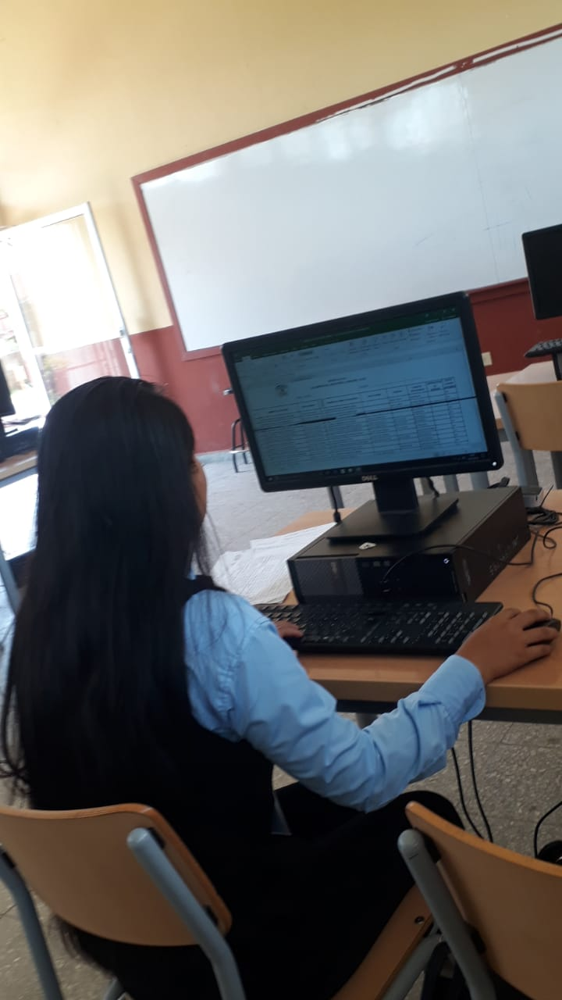

III BTP en Informática
Amistad
Actividades
Trabajos informáticos
Jefe Inmediato
Licenciada Elva Zenayda Mancia Avila

¿En qué consiste mi Práctica?
Mi practica consiste en desarrollar todas mis habilidades aprendidas durante todo el proceso educativo del año.
La practica profesional es la etapa donde ponemos en practica todos nuestros cononocimientos adqiridos ,tratando de realizar nuevos retos y viviendo nuevas experiencias.
.Tambien es una poportunidad que nos permite adquirir nuevos conocimientos que nos ayudaran para enfrentarnos al campo laboral
.La cual es una actividad curricular obligatoria que forma parte del proceso para obtener el titulo de Bachillerato Tecnico Profecional en Informatica.